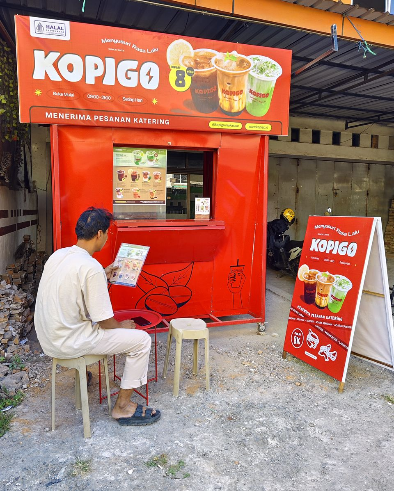
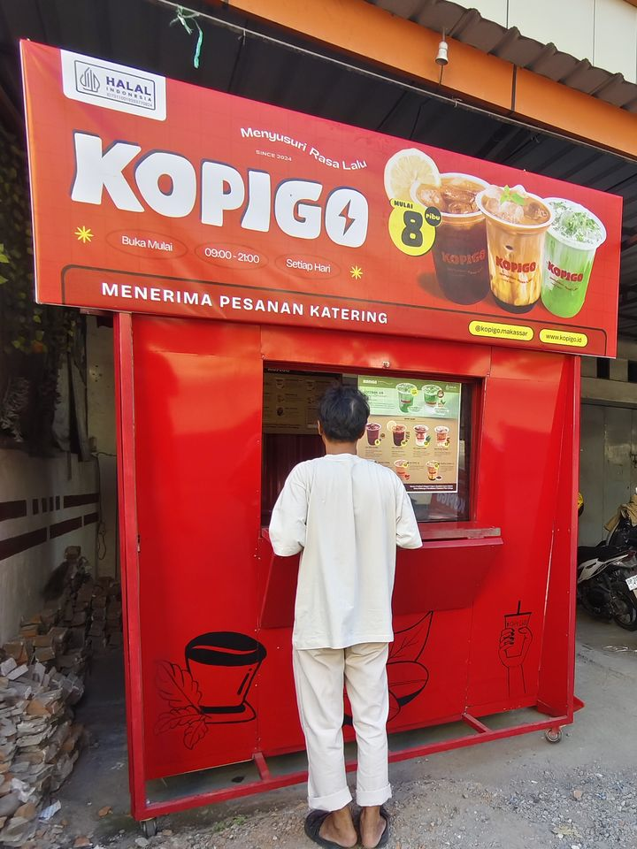
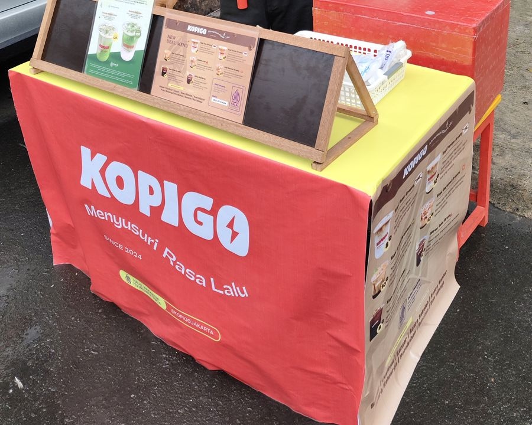

Punya tempat kosong? Jadikan titik jualan KOPIGO.
Kamu punya lokasinya, KOPIGO mengirim minuman siap minum. Kamu memajang dan menjual, lalu menerima komisi per gelas dan bagi hasil.

Siapa menyiapkan apa
KOPIGO menyiapkan
- Minuman siap minum dari Central Kitchen
- Spanduk, banner, dan daftar menu
- Aplikasi pencatatan penjualan
- Pembayaran QRIS
- Web Laporan Mitra untuk melihat penjualan dan bagianmu
Kamu menyiapkan
- Lokasi yang dilewati banyak orang
- Lemari pendingin atau showcase
- Meja atau tempat memajang
- Sambungan listrik
- Waktu untuk mengambil stok, menjual, dan mencatat penjualan
Harga jual ditetapkan KOPIGO, Rp8.000 sampai Rp13.000 per gelas. Kamu tidak perlu membuat kopinya sendiri.
Yang kamu terima
Ada dua sumber: komisi untuk setiap gelas yang terjual, dan bagi hasil dari laba bersih titikmu.
Komisi per gelas
| Rata-rata terjual per hari | Komisi |
|---|---|
| Kurang dari 30 gelas | Rp1.000 per gelas |
| 30 sampai 49 gelas | Rp1.500 per gelas |
| 50 gelas atau lebih | Rp2.000 per gelas |
Tarif berlaku untuk semua gelas dalam satu periode, sesuai rata-rata harianmu di periode itu.
Cara mulai
- Ajukan lokasimu. Isi form di bawah, lalu kirim foto tempatnya lewat WhatsApp.
- Kami hubungi kamu. Tim KOPIGO membalas di WhatsApp untuk membahas lokasi dan perjanjiannya.
- Tanda tangan perjanjian. Kerja sama awal berlaku 3 bulan dan bisa diperpanjang.
- Ambil stok dan mulai jual. Stok diambil di Central Kitchen KOPIGO di Panaikang, Makassar. Jumlah dan jadwalnya diatur lewat grup WhatsApp.
Lokasi yang kami cari
- Paling jauh sekitar 10 sampai 20 km dari Central Kitchen KOPIGO di Panaikang, Makassar
- Sudah punya lemari pendingin atau showcase
- Ada sambungan listrik dan tempat memajang
- Dilewati orang setiap hari
Titik yang sudah berjalan


Titik lain yang berjalan: Jalan Malino, Gowa.
Yang sering ditanyakan
Listrik dan es batu siapa yang bayar?
Kamu membayarnya dulu dari uang hasil penjualan dan menyimpan notanya. Biaya itu dicatat sebagai beban operasional titik, lalu dikurangkan sebelum bagi hasil dihitung.
Apakah saya harus membuat kopinya?
Tidak. Produk datang siap minum dari Central Kitchen KOPIGO. Kamu mengambil stok, menyimpannya dingin, dan menjualnya.
Bagaimana cara mengambil stok?
Stok diambil di Central Kitchen KOPIGO di Panaikang, Makassar. Jumlah dan jadwalnya kita atur bersama lewat grup WhatsApp.
Bagaimana kalau produk tidak laku?
Matcha dijual paling lama 7 hari, kopi bisa 10 hari atau lebih. Setelah sekitar 7 hari, kami menanyakan produk yang tidak bergerak supaya bisa diretur.
Kapan komisi dan bagi hasil dibayar?
Mengikuti tutup buku Central Kitchen, saat ini tanggal 25 atau 26 setiap bulan.
Bagaimana saya tahu hitungannya benar?
Kamu mendapat akses ke Web Laporan Mitra. Di sana terlihat omzet, harga pokok, beban operasional, komisi, dan bagianmu untuk tiap periode.
Pembeli bayar pakai apa?
Tunai atau QRIS. Pembayaran QRIS masuk langsung ke KOPIGO dan kamu menerima notifikasi saat pembayaran berhasil. Uang tunai kamu setorkan sesuai jadwal di perjanjian.
Apa bedanya dengan Franchise Signature?
Di Titik Jualan kamu menjual produk jadi dari KOPIGO dan tidak memproduksi sendiri. Untuk membuka gerai KOPIGO sendiri, lihat halaman kemitraan.
Ajukan lokasimu
Isi data di bawah. WhatsApp akan terbuka dengan pesan yang sudah terisi.